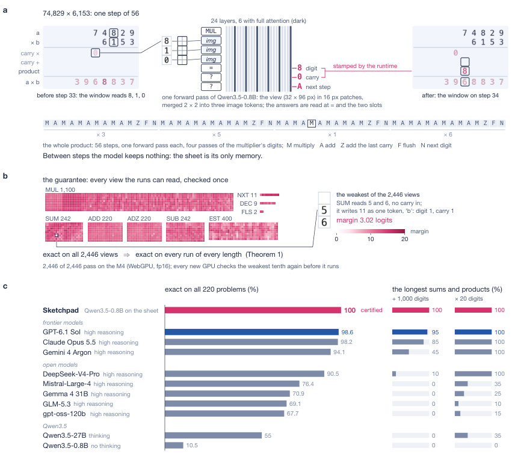
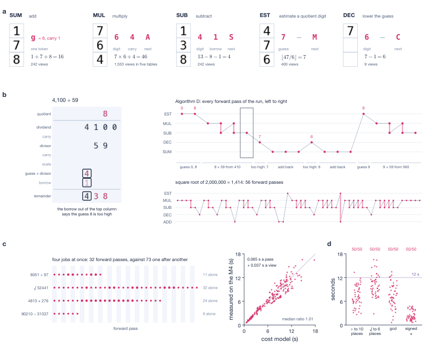
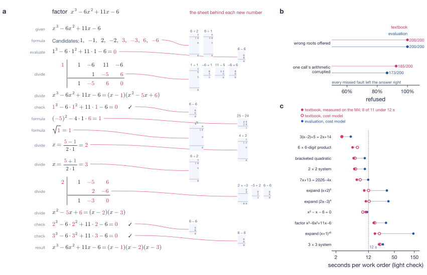

Theorems on exactness over finite views, impossibility of finite tests with history, perturbation robustness and composition are proved in Lean 4 with Mathlib.
Abstract
Language models are accurate on most long-arithmetic problems, but their accuracy is estimated on samples and carries no guarantee for an unseen input; tool use is exact but moves the computation outside the network. We show that exactness at all input lengths becomes a finite, checkable property of a network when each of its steps reads only a bounded view of an external working memory. In Sketchpad, Qwen3.5-0.8B with a low-rank adapter executes arithmetic procedures on a rendered sheet. Each forward pass reads a three-cell view and emits one step: a digit, a carry or borrow, and the next operation. A fixed runtime moves the view and writes no digit of a result. We prove in Lean that the model is then exact on all inputs of any length if and only if it is exact on the finite set of views the runtime presents, that no finite test suffices when steps also read earlier steps, and that the guarantee tolerates bounded numerical perturbation and extends to compositions of procedures. All 2,446 views pass on the deployment device, a laptop GPU running the model in a web browser. The certified model performs signed addition and subtraction, long multiplication and division, square roots and greatest common divisors at arbitrary length. It solved 200 of 200 pre-registered problems in the browser, and 220 of 220 sums of up to 1,000 digits and products of up to 20 digits, of which GPT-6.1 Sol, the strongest of ten other models, solved 217. A symbolic runtime built on these procedures solves, expands and factors polynomials with every number computed by the model, and a multiplicative gate on the adapter recovers the base model exactly when the sheet is not in use.
Problem
Language-model accuracy on long arithmetic is estimated from samples and gives no guarantee for unseen inputs. Tool use is exact but moves the computation outside the network. The goal is a network-level guarantee of exactness at every input length.
Approach
Qwen3.5-0.8B with a LoRA adapter executes pencil-and-paper arithmetic on a rendered sheet. Each forward pass reads a three-cell view and emits a digit, a carry or borrow, and the next operation, while a fixed runtime moves the view. Lean 4 proofs (with Mathlib) show that the model is exact at all lengths iff it is exact on the finite set of 2,446 views, that no finite test suffices when steps read earlier steps, and that the guarantee tolerates bounded perturbation and composes across procedures. The finite check is then run on the deployment hardware.

Fig. 1 | Overview. a , One step of the long multiplication 74,829 \times 6,153 (step 33 of 56). The view (three cells, 32 \times 96 pixels) enters Qwen3.5-0.8B as three image tokens after the operation token MUL ; the outputs, read at = and two placeholder positions, are the digit, the carry and the next operation. Below: the operation sequence of the full product. b , Margins of all 2,446 views o

Fig. 2 | The sheet machine. a , One view and its outputs for each calculator table. b , Left: the division 4,100 \div 59; the borrow out of the leading column indicates that the estimate 8 is too high. Right: the operation sequence of the same division (Knuth’s Algorithm D) and of the square root of 2,000,000 (56 forward passes). c , Batching four independent procedures: 32 forward passes instead
Results
All 2,446 views pass on an M4 laptop GPU in the browser with a minimum margin of 3.02 logits. The model solved 200/200 pre-registered problems and 220/220 sums and products, against 217 for the best of ten other models. Certified procedures support polynomial algebra, and a multiplicative gate on the adapter recovers the base model exactly when the sheet is not in use.

Fig. 4 | Algebra. a , Factorisation of x^{3}-6x^{2}+11x-6 . Numbers in rose were computed by the model; each is linked to the column operation that produced it. b , Rejection rates under fault injection: incorrect roots (200 of 200 for both routes) and one corrupted arithmetic result (185 of 200 for the textbook route, 173 of 200 for evaluation). c , Time per benchmark problem: textbook route meas